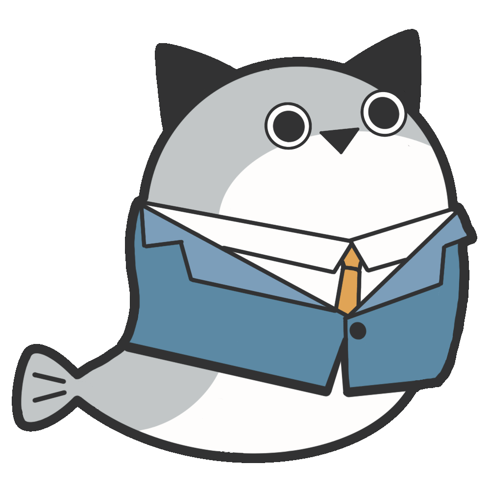

薩卡的主張
我堅信，藉由推動更完善的貓咪福利和相關政策，更是間接地投資於台灣的未來。畢竟，民眾的身心健康與工作熱情是
推動經濟的核心動力。透過完善的貓咪福利政策，為台灣的GDP 經濟帶來巨大效益。
因此，我期望能在立法院內推進這些政策，確保每一隻貓咪都能得到他們應有的照顧，同時也為台灣的經濟發展助一臂
之力。讓我們一同護航台灣的幸福經濟，從照顧每一隻貓咪開始。

關於薩卡
經歷
曾擔任「喵星宇宙」顧問
現任「喵喵大好」榮譽理事長
國立喵喵大學特聘講師及榮譽校友
學歷
英國哈喵大學 / 喵行為學系博士畢業
國立喵喵大學 / 喵行為學系碩士畢業
國立喵喵大學 / 喵喵心理系學士畢業
薩卡的起源
薩卡出生於澳洲附近的海域，隨著洋流去過很多地方，某天在躲避掠食者的攻擊時，努力的一躍跳上了岸，發現自己竟然可以在空氣中自由呼吸，於是薩卡開始了地面上的旅行。
風和日麗的某個夏天，薩卡走進了貓咪咖啡廳，馬上就被許多＼＼＼世界上最可愛的生物們／／／包圍了，基於散播歡樂散播愛的理念，薩卡決定要將＼＼＼貓貓的可愛／／／發揚光大。
「就從改善這個太平洋小島的貓貓權益開始吧！」於是薩卡戴上了貓耳，決心參選下一屆立委！
薩卡班甲魚
Sacabambasp
サカバンバスピ
Sacabambasp
サカバンバスピ